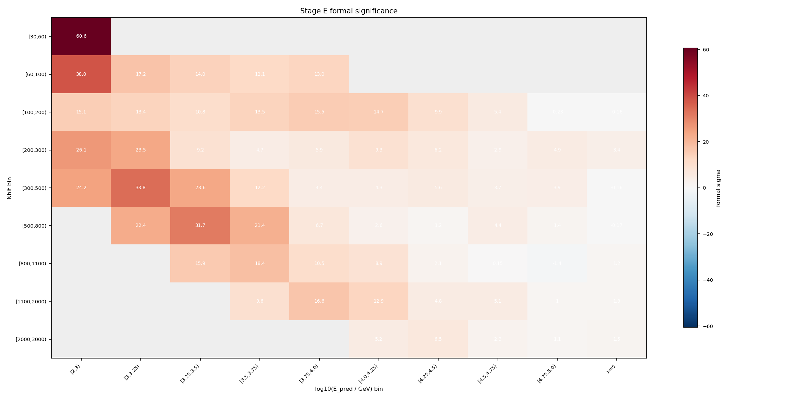
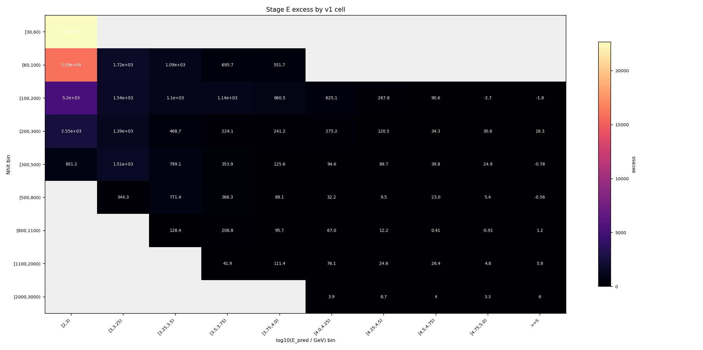
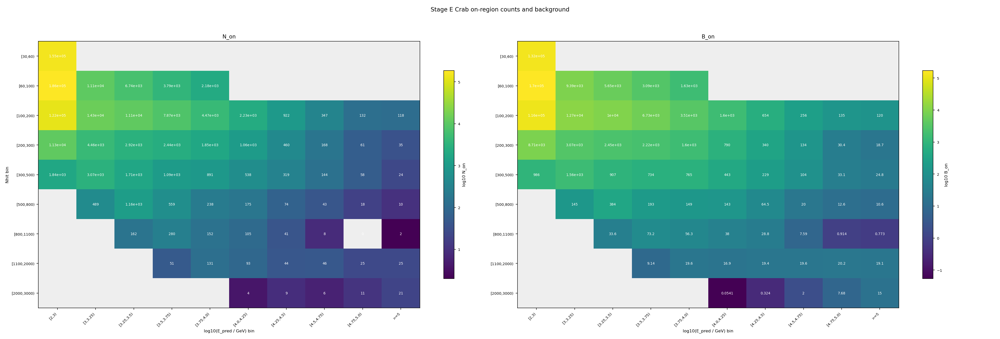
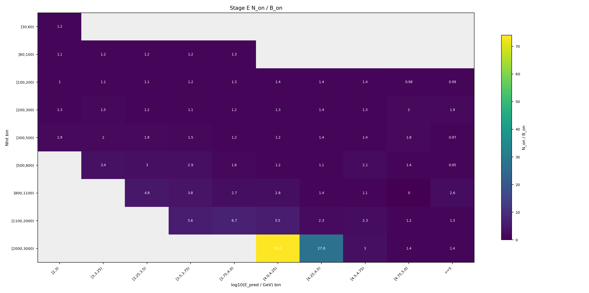
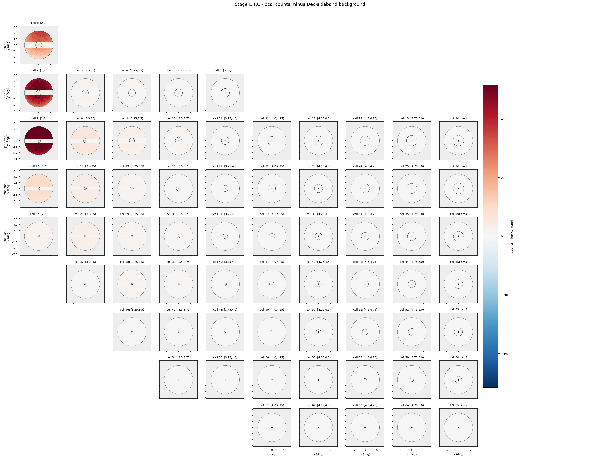
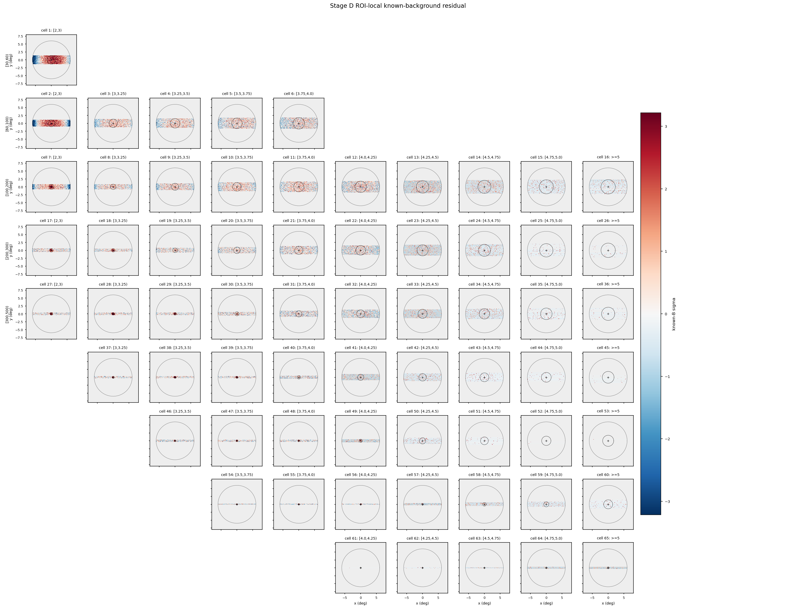
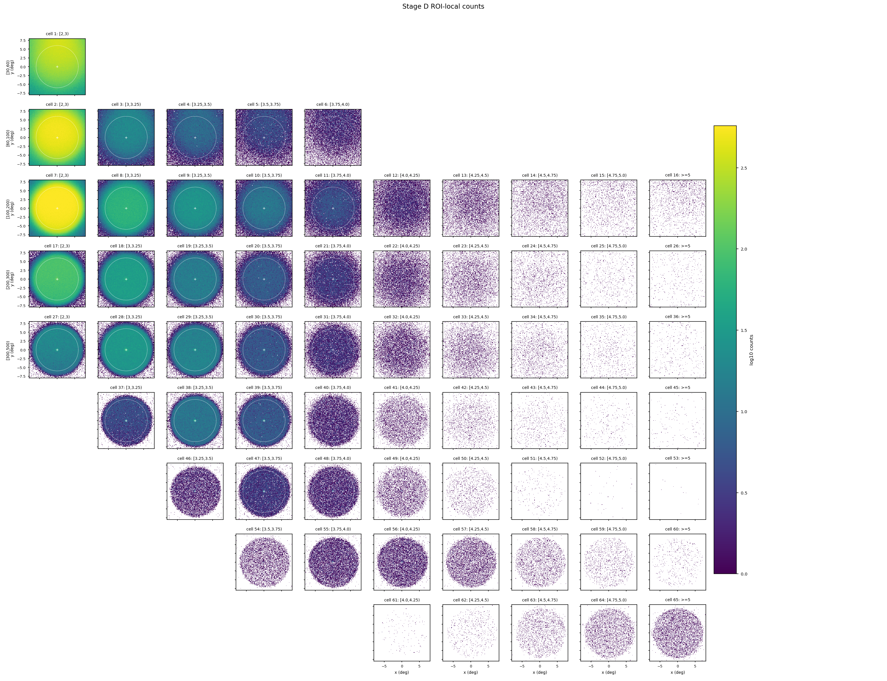
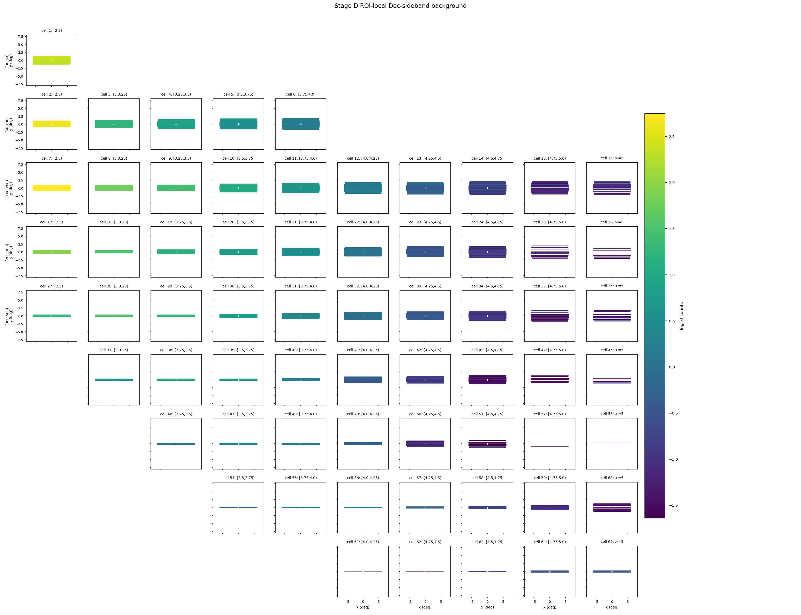

Stage E 信号提取报告
本页把 Stage E 的输出翻译成可读的分析说明：它不是在拟合能谱，而是在每个 (Nhit, log10 E_pred) cell 里统计 Crab 源区计数，并扣除 Stage D 给出的背景期望，得到后续 Stage F forward folding 拟合要使用的信号表。
一句话结论
Stage E 已经在 18 个 v1 physical-band cell 上完成 Crab on-region 计数。总源区计数 N_on = 566,085，Stage D 背景期望 B_on = 500,871，因此总 excess 为 65,213.9，known-background 形式的总诊断显著性为 90.2478 sigma。质量门状态为 passed。
passed。
当前配置要求总 formal sigma 位于
[50, 200] 之间。本次结果为 90.2478，通过质量门，可以作为 Stage F 的输入候选。
为什么要做 Stage E
前面几个阶段各自只解决了问题的一部分：Stage A 给出 MC 响应矩阵，Stage B 给出每个 cell 的 PSF 和积分半径，Stage C 把观测 ROOT 规约成带 RA/Dec/MJD/cell_id 的 parquet，Stage D 估计每个 cell 在 Crab 孔径内应有多少背景。到这里还没有得到“Crab 在每个 cell 贡献了多少信号”。
Stage E 就是这个桥梁：它把观测到的源区计数 N_on 和背景期望 B_on 合成 excess。Stage F 不直接拿所有事件拟合，而是拿 Stage E 产出的逐 cell excess 表，和 Stage A 响应折叠出来的模型预期数做比较。
Stage E 在做什么
ra_mean_deg、dec_mean_deg、cell_id。r_opt_deg，即约 1.58 sigma 的最优积分半径。r_opt，计入 N_on,b。B_on,b，计算 excess_b = N_on,b - B_on,b。本次 Stage D 使用的是 Crab 局部 ROI 背景模型，所以 Stage E 也只在同一套 fiducial ROI 内工作：rho < 6 deg。这保证 N_on 的统计口径和 B_on 的背景口径一致。
具体怎么做的
1. 事件选择和几何
- 源位置固定为 Crab：
RA = 83.63 deg，Dec = 22.01 deg。 - 先按 Stage D 的局部 ROI 约束保留
rho < 6 deg的事件；本次保留18,301,034行，剔除65,604,772行。 - 随后用球面角距离公式计算事件与 Crab 的夹角
sep，每个 cell 判断sep <= r_opt_deg[cell]。
2. 背景和统计量
Stage D 输出的是 direct_expectation，也就是直接背景期望 B_on。它不是传统 off 区计数，因此本报告不把 B_on 强行拆成 alpha × N_off，表格里的 Li-Ma 显示为 n/a。
excess_b = N_on,b - B_on,b- conservative 误差口径：
sqrt(N_on,b + B_on,b) - 本次 formal sigma：
Poisson known-background aggregate diagnostic - known-background 诊断公式：
sign(N_on-B_on) * sqrt(2 * (N_on ln(N_on/B_on) - (N_on-B_on)))
alpha。本次 Stage D 给的是直接背景期望，不是 off 区事件数，所以 Li-Ma 在数学上不适用。这里的显著性是一个诊断量，用来检查信号是否合理；最终能谱结果仍要看 Stage F 之后的拟合和系统误差检查。
结果怎么读
下表每一行是一个 v1 拟合 cell。Nhit bin 表示 shower size 分箱，log10 E_pred bin 是 ML 预测能量分箱。低 Nhit、低预测能量 cell 统计量最大；高 Nhit、高预测能量 cell 背景很低，但如果仍有明显 positive excess，就对高能端谱形很有价值。
| cell | Nhit bin | log10 E_pred bin | r_opt deg | N_on | B_on | excess | stat err | known-B sigma | Li-Ma |
|---|---|---|---|---|---|---|---|---|---|
| 1 | [30,60) | [2,3) | 1.355 | 155,030 | 132,381 | 22,649.4 | 393.74 | 60.591 | n/a |
| 2 | [60,100) | [2,3) | 1.086 | 185,722 | 169,831 | 15,890.9 | 430.95 | 37.981 | n/a |
| 3 | [60,100) | [3,3.25) | 1.325 | 11,105 | 9,388.57 | 1,716.43 | 105.38 | 17.212 | n/a |
| 4 | [60,100) | [3.25,3.5) | 1.51 | 6,738 | 5,650.99 | 1,087.01 | 82.085 | 14.03 | n/a |
| 5 | [60,100) | [3.5,3.75) | 1.67 | 3,790 | 3,094.27 | 695.726 | 61.563 | 12.078 | n/a |
| 6 | [60,100) | [3.75,4.0) | 1.825 | 2,184 | 1,632.29 | 551.714 | 46.733 | 12.978 | n/a |
| 7 | [100,200) | [2,3) | 0.7924 | 121,656 | 116,452 | 5,203.98 | 348.79 | 15.138 | n/a |
| 8 | [100,200) | [3,3.25) | 0.839 | 14,285 | 12,745.1 | 1,539.88 | 119.52 | 13.378 | n/a |
| 9 | [100,200) | [3.25,3.5) | 1.113 | 11,127 | 10,028.9 | 1,098.09 | 105.48 | 10.774 | n/a |
| 10 | [100,200) | [3.5,3.75) | 1.37 | 7,866 | 6,730.62 | 1,135.38 | 88.69 | 13.475 | n/a |
| 11 | [100,200) | [3.75,4.0) | 1.592 | 4,474 | 3,513.47 | 960.53 | 66.888 | 15.54 | n/a |
| 12 | [100,200) | [4.0,4.25) | 1.804 | 2,230 | 1,604.91 | 625.086 | 47.223 | 14.726 | n/a |
| 13 | [100,200) | [4.25,4.5) | 1.983 | 922 | 654.169 | 267.831 | 30.364 | 9.857 | n/a |
| 14 | [100,200) | [4.5,4.75) | 2.06 | 347 | 256.412 | 90.5882 | 18.628 | 5.3653 | n/a |
| 15 | [100,200) | [4.75,5.0) | 2.223 | 132 | 134.662 | -2.66154 | 11.489 | -0.23012 | n/a |
| 16 | [100,200) | >=5 | 2.264 | 118 | 119.791 | -1.79121 | 10.863 | -0.16407 | n/a |
| 17 | [200,300) | [2,3) | 0.5577 | 11,259 | 8,710 | 2,549 | 106.11 | 26.12 | n/a |
| 18 | [200,300) | [3,3.25) | 0.5469 | 4,457 | 3,068.28 | 1,388.72 | 66.761 | 23.467 | n/a |
| 19 | [200,300) | [3.25,3.5) | 0.7287 | 2,918 | 2,449.34 | 468.659 | 54.019 | 9.1894 | n/a |
| 20 | [200,300) | [3.5,3.75) | 1.033 | 2,441 | 2,216.86 | 224.14 | 49.406 | 4.6835 | n/a |
| 21 | [200,300) | [3.75,4.0) | 1.301 | 1,846 | 1,604.81 | 241.194 | 42.965 | 5.8787 | n/a |
| 22 | [200,300) | [4.0,4.25) | 1.526 | 1,065 | 789.814 | 275.186 | 32.634 | 9.2927 | n/a |
| 23 | [200,300) | [4.25,4.5) | 1.747 | 460 | 339.515 | 120.485 | 21.448 | 6.2002 | n/a |
| 24 | [200,300) | [4.5,4.75) | 1.904 | 168 | 133.652 | 34.3479 | 12.961 | 2.8558 | n/a |
| 25 | [200,300) | [4.75,5.0) | 2.112 | 61 | 30.4321 | 30.5679 | 7.8102 | 4.8683 | n/a |
| 26 | [200,300) | >=5 | 2.275 | 35 | 18.7179 | 16.2821 | 5.9161 | 3.3536 | n/a |
| 27 | [300,500) | [2,3) | 0.4216 | 1,837 | 985.757 | 851.243 | 42.86 | 24.176 | n/a |
| 28 | [300,500) | [3,3.25) | 0.3961 | 3,067 | 1,556.3 | 1,510.7 | 55.381 | 33.762 | n/a |
| 29 | [300,500) | [3.25,3.5) | 0.4156 | 1,706 | 906.865 | 799.135 | 41.304 | 23.618 | n/a |
| 30 | [300,500) | [3.5,3.75) | 0.6477 | 1,088 | 734.112 | 353.888 | 32.985 | 12.179 | n/a |
| 31 | [300,500) | [3.75,4.0) | 0.9901 | 891 | 765.432 | 125.568 | 29.85 | 4.4223 | n/a |
| 32 | [300,500) | [4.0,4.25) | 1.254 | 538 | 443.392 | 94.6085 | 23.195 | 4.3459 | n/a |
| 33 | [300,500) | [4.25,4.5) | 1.446 | 319 | 229.345 | 89.6552 | 17.861 | 5.5863 | n/a |
| 34 | [300,500) | [4.5,4.75) | 1.647 | 144 | 104.22 | 39.78 | 12 | 3.6814 | n/a |
| 35 | [300,500) | [4.75,5.0) | 1.828 | 58 | 33.097 | 24.903 | 7.6158 | 3.9077 | n/a |
| 36 | [300,500) | >=5 | 2.086 | 24 | 24.7787 | -0.778676 | 4.899 | -0.15726 | n/a |
| 37 | [500,800) | [3,3.25) | 0.3411 | 489 | 144.73 | 344.27 | 22.113 | 22.409 | n/a |
| 38 | [500,800) | [3.25,3.5) | 0.3108 | 1,155 | 383.622 | 771.378 | 33.985 | 31.675 | n/a |
| 39 | [500,800) | [3.5,3.75) | 0.3253 | 559 | 192.676 | 366.324 | 23.643 | 21.405 | n/a |
| 40 | [500,800) | [3.75,4.0) | 0.5331 | 238 | 148.869 | 89.1309 | 15.427 | 6.7141 | n/a |
| 41 | [500,800) | [4.0,4.25) | 0.9741 | 175 | 142.821 | 32.1791 | 13.229 | 2.6 | n/a |
| 42 | [500,800) | [4.25,4.5) | 1.183 | 74 | 64.4996 | 9.50045 | 8.6023 | 1.1556 | n/a |
| 43 | [500,800) | [4.5,4.75) | 1.399 | 43 | 20.0358 | 22.9642 | 6.5574 | 4.4439 | n/a |
| 44 | [500,800) | [4.75,5.0) | 1.549 | 18 | 12.6168 | 5.38325 | 4.2426 | 1.4234 | n/a |
| 45 | [500,800) | >=5 | 1.862 | 10 | 10.5602 | -0.560173 | 3.1623 | -0.17394 | n/a |
| 46 | [800,1100) | [3.25,3.5) | 0.2562 | 162 | 33.5676 | 128.432 | 12.728 | 15.91 | n/a |
| 47 | [800,1100) | [3.5,3.75) | 0.2622 | 280 | 73.2162 | 206.784 | 16.733 | 18.374 | n/a |
| 48 | [800,1100) | [3.75,4.0) | 0.2969 | 152 | 56.2703 | 95.7297 | 12.329 | 10.518 | n/a |
| 49 | [800,1100) | [4.0,4.25) | 0.5141 | 105 | 38.0441 | 66.9559 | 10.247 | 8.9041 | n/a |
| 50 | [800,1100) | [4.25,4.5) | 0.9862 | 41 | 28.7551 | 12.2449 | 6.4031 | 2.1448 | n/a |
| 51 | [800,1100) | [4.5,4.75) | 1.234 | 8 | 7.59221 | 0.407786 | 2.8284 | 0.1467 | n/a |
| 52 | [800,1100) | [4.75,5.0) | 1.471 | 0 | 0.913793 | -0.913793 | 0 | -1.3519 | n/a |
| 53 | [800,1100) | >=5 | 1.753 | 2 | 0.772727 | 1.22727 | 1.4142 | 1.1616 | n/a |
| 54 | [1100,2000) | [3.5,3.75) | 0.2139 | 51 | 9.13514 | 41.8649 | 7.1414 | 9.5749 | n/a |
| 55 | [1100,2000) | [3.75,4.0) | 0.2172 | 131 | 19.5676 | 111.432 | 11.446 | 16.592 | n/a |
| 56 | [1100,2000) | [4.0,4.25) | 0.2324 | 93 | 16.8649 | 76.1351 | 9.6437 | 12.857 | n/a |
| 57 | [1100,2000) | [4.25,4.5) | 0.2924 | 44 | 19.4324 | 24.5676 | 6.6332 | 4.7731 | n/a |
| 58 | [1100,2000) | [4.5,4.75) | 0.5587 | 46 | 19.5839 | 26.4161 | 6.7823 | 5.0724 | n/a |
| 59 | [1100,2000) | [4.75,5.0) | 0.8078 | 25 | 20.2141 | 4.78592 | 5 | 1.0261 | n/a |
| 60 | [1100,2000) | >=5 | 1.424 | 25 | 19.1328 | 5.86719 | 5 | 1.2803 | n/a |
| 61 | [2000,3000) | [4.0,4.25) | 0.1591 | 4 | 0.0540541 | 3.94595 | 2 | 5.1518 | n/a |
| 62 | [2000,3000) | [4.25,4.5) | 0.1775 | 9 | 0.324324 | 8.67568 | 3 | 6.5167 | n/a |
| 63 | [2000,3000) | [4.5,4.75) | 0.2024 | 6 | 2 | 4 | 2.4495 | 2.2767 | n/a |
| 64 | [2000,3000) | [4.75,5.0) | 0.256 | 11 | 7.67568 | 3.32432 | 3.3166 | 1.126 | n/a |
| 65 | [2000,3000) | >=5 | 0.3034 | 21 | 14.973 | 6.02703 | 4.5826 | 1.4675 | n/a |
例如 cell 1 和 cell 2 贡献了最多的绝对 excess；而 cell 16、17 这类高 Nhit cell 虽然计数少，但背景更低，known-B 诊断显著性仍然很强。整体上，正 excess 沿着高 Nhit 对应高 log10 E_pred 的物理带出现，这是我们希望看到的结构。
诊断图怎么看




和 Stage D 正式去背景天图的关系
下面几张图来自 Stage D 正式 ROI-local 背景输出，不再使用此前平滑 skymap 的 sideband 近似。它们直接读取 background_v1.npz 中的 counts_map 和 background_map：去背景天图是逐像素 counts_map - background_map，residual 天图是同一背景期望下的 Poisson 诊断量。
B_on 是把同一个 Stage D background_map 积分到每个 cell 的 Crab on-region 后得到的；这里的天图只是把同一个过程摊回 ROI 像素上，方便人眼检查源形态。




输出文件和下一步
apply/output/stage_e/current/signal_v1.npz：Stage F 直接读取的数组，包含N_on、B_on、excess、误差和显著性。apply/output/stage_e/current/signal_v1_summary.csv：逐 cell 表格，适合人工检查和快速画图。apply/output/stage_e/current/signal_v1_metadata.json：输入路径、Stage D 合约、ROI 口径、统计公式和质量门信息。apply/output/stage_e/current/*.png：二维 cell 诊断图。
excess_b 比较，拟合幂律或 log-parabola 谱参数。